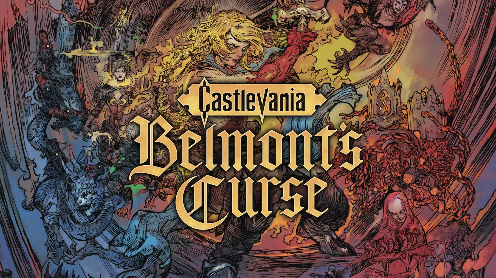
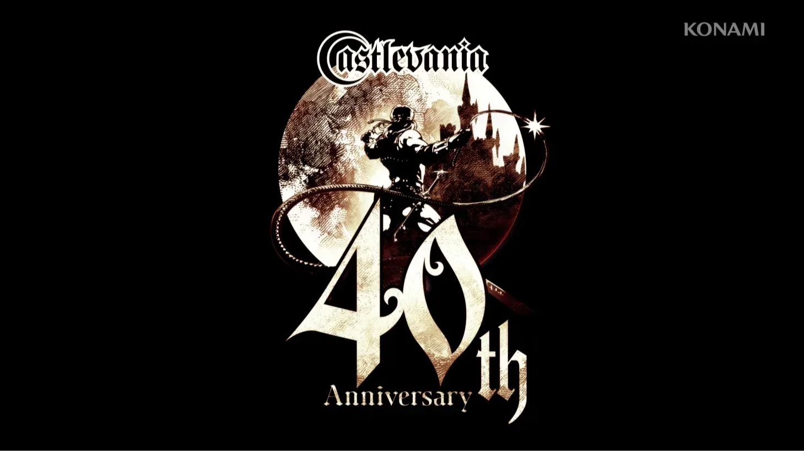

Silent Hill: Townfall recibió hoy su actualización 1.4.0, y el cambio más importante apunta directamente a uno de los elementos que más frustración generó entre los jugadores: las secciones de sigilo protagonizadas por The Weight.
En las dificultades Story y Normal, los ataques de agarre de esta criatura ya no provocan una muerte instantánea. Ahora causan una gran cantidad de daño, lo que permite al jugador sobrevivir al encuentro y continuar con la partida. Además, Screen Burn Interactive modificó el comportamiento de la criatura para evitar que permanezca demasiado tiempo frente al objetivo del jugador, repita búsquedas en un mismo lugar o persiga al protagonista de manera excesivamente agresiva.
Los cambios no se limitan a The Weight. La actualización también reduce la sensibilidad de los enemigos frente al sonido de los disparos, las carreras y las acciones realizadas al esconderse. A esto se suma una reducción en la frecuencia de los contraataques enemigos después de recibir golpes cuerpo a cuerpo y la eliminación de determinados agarres cuando el jugador está bloqueando con un arma.
También se modificaron los rompecabezas
Otro de los cambios importantes está relacionado con uno de los rompecabezas más complejos del tramo final. El parche incorpora un manual coleccionable que permite consultar rápidamente las instrucciones necesarias para utilizar la consola de Remote Systems Control mientras se resuelve el acertijo.
También se modificó el diseño del rompecabezas Aux Line para que la disposición de las tuberías resulte más clara. La intención parece ser reducir la necesidad de recurrir a guías externas y hacer que la solución pueda deducirse con mayor facilidad dentro del propio juego.
La actualización incluye además varias correcciones técnicas, entre ellas un problema que podía bloquear el progreso en la Parte 5, situaciones en las que el jugador podía salir de los límites del escenario y mejoras en el frame pacing y el stuttering durante la transmisión de datos.
Una respuesta directa a las críticas
Los cambios llegan poco después de que Screen Burn reconociera públicamente las críticas hacia las secciones protagonizadas por The Weight. El estudio había adelantado que estaba trabajando en un ajuste de balance después de que numerosos jugadores señalaran que estos segmentos rompían el ritmo de la aventura.
La propia recepción crítica había identificado este problema. La propuesta de Townfall fue elogiada por su atmósfera y su terror psicológico, pero las secciones de sigilo fueron señaladas como uno de sus principales puntos débiles.
Ahora Konami y Screen Burn intentan corregir precisamente esa parte de la experiencia. El objetivo no parece ser transformar Townfall en un juego más fácil, sino eliminar situaciones que podían sentirse injustas o excesivamente frustrantes, especialmente durante los encuentros en los que The Weight perseguía al jugador.
Silent Hill: Townfall está disponible en PlayStation 5, Steam y Epic Games Store. La actualización 1.4.0 ya está disponible en esas plataformas.
 30 de septiembre de 2026
30 de septiembre de 2026
Silent Hill: Townfall recibirá un parche para hacer menos frustrantes las secciones contra The Weight
Screen Burn confirmó que está trabajando en un nuevo parche para Silent Hill: Townfall que modificará el balance de las secciones de sigilo protagonizadas por The Weight. El enemigo fue uno de los aspectos más cuestionados por jugadores y análisis, debido a su comportamiento, su capacidad para detectar al protagonista y las muertes instantáneas.

1 de octubre de 2026Castlevania: Belmont's Curse ya tiene demo y permite transferir la partida al juego completo
Konami lanzó una demo gratuita de Castlevania: Belmont's Curse que permite jugar el comienzo de la aventura y transferir el progreso a la versión completa. El nuevo juego protagonizado por Rose Belmont llegará el 15 de octubre a PC, PS5, Xbox Series X|S y Nintendo Switch.

25 de septiembre de 2026Castlevania cumple 40 años y Konami regala el juego original para celulares
La histórica franquicia de Konami celebra cuatro décadas y la compañía inició una serie de actividades especiales. El Castlevania original de 1986 puede descargarse gratis en iOS y Android hasta el 24 de octubre, mientras que también hay descuentos de hasta el 80% y nuevas actividades vinculadas a la celebración.
Cargando comentarios…